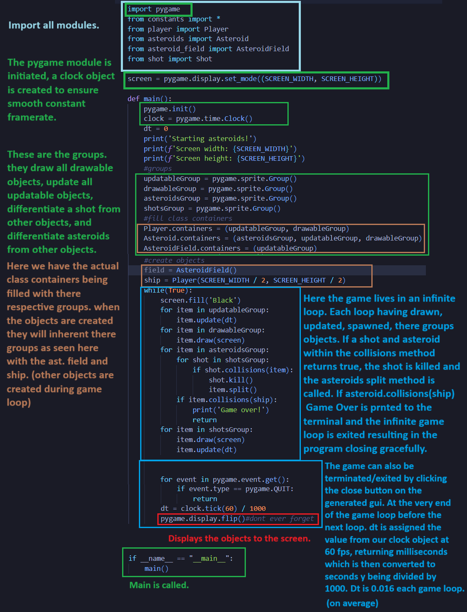

Thomas' Projects
Asteroids
I know what your thinking.. That game is simple and has been made many times over! While that is true I used this project to experiment with the Pygame moduel and learned many things along the way.
The Code
Before graphics and controller
- This is the REPO before graphics and controller inputs.
Here is a look at the root directory.
requirements.txt
Short and sweet! The only requirements for the game are pygame2.6.0, with that the game will run great!
constants.py
If you have developed games before you probly understand the importance of constant variables. If not, the constant variables provide controle to testing the feel of the game and how it behaves. Rather than searching for every instance of player speed in the game, I can simply modify one variable.
circleshape.py
The foundation of every object in the game is a circleshape. Acting as a hit box, north star for positioning, and in some cases the actual graphic.
player.py
Here is the star of the show, the player! This class handles player positioning, inputs to control player, and a method to create shot objects. speaking of shots..
shot.py
Pretty standard stuff here an object drawn traveling away from the path it was spawnd.(from players position) Lets get into these containers..
main.py

The main file is ran to start the game, here we can see how the containers are filled with Pygame groups. In the game loop these groups iterate through each of there objects and preform various method calls. This was a very structured way to handle game logic and distinguish objects from each other. As you can see the asteroids are in action, lets check it out!
asteroids.py
Here is the Asteroid class. The asteroid is simply drifting though space drawing its self at its new positions each loop and running its split method in the case it collides with a shot. Each asteroid is simply part of an asteroid field. Lets see how these asteroids exist winthin thate field object.